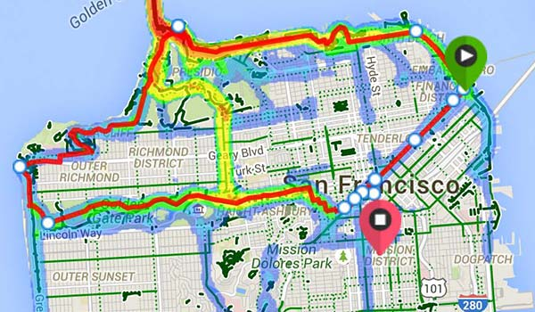
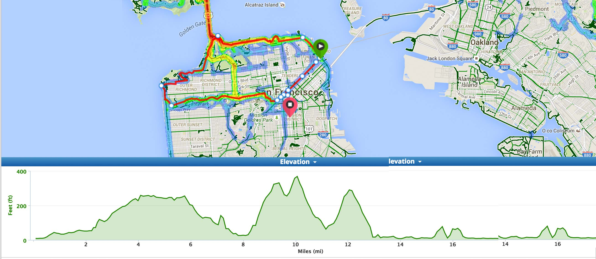

A weekly bike ride through San Francisco... in reverse.
Come to socialize ride, exercise ride faster and have fun no, wait... yes, have fun!
Time: Every Wednesday at 7pm. Roll out around at 7:15pm
Starting location: In front of the Ferry Building in San Francisco (approximate location)
Route description: We start with the OG Butterlap folks at the Ferry Building. Then we do the OG Butterlap route in reverse, making only one 15 minute stop to catch our breathes, finishing the ride at Bender's bar in the Mission
Stop 1: The Legion of Honor or the Scenic Overlook around Lincoln Blvd. and Washington Blvd. (depending on the cumulative Ninja hustle!)
Stop 2: Bender's Bar and Grill (Great food and Whiskey Wednesdays!)


More route information -- Not perfect
How many people usually come? (1 - ?). The Butterlap Ninja ride welcomes everyone that wants to kick their OG Butterlap ride up a notch.
This is an advanced paced ride.
What kind of people come to the Butterlap Ninja ride? The same people that rock the OG Butterlap... awesome, caring, fabulous bike-people!
How fast do people pedal? The Butterlap Ninja ride is for those that feel comfortable pedaling hard and moving fast. Riders are responsible for their own speeds. Ninjas have found that the route takes approximately 1 hour 30 minutes of total riding time at an average speed of 13 miles per hour. The Butterlap Ninja ride makes one 15 minute stop to socialize, refuel, regroup and meet up with the OG Butterlap crew.
What kind of bike should I bring? Bring the bike you feel most comfortable riding: road, cross, fix, mountain, uni, tall... Ninjas never hate on bike types. Please be prepared to ride 18 miles with a 1000 feet accumulative climb. Most riders have tools and repair kits to help fellow riders in a bind, but for the most part, you will be responsible for your own safety and gear.
What else should I bring? Whatever makes you ride fast and hard. Music, booze, a lizard in your bike shorts, a picture of your parents during sexy times... Ninjas never discrimenate. It also might be a good idea to wear a layer or two as this ride goes along the ocean and it can get a bit cold over there.
What time does the ride end? The Butterlap Ninja ride is approximately 1 hour and 30 minutes of riding and a 15 minute social hangout with the OG Butterlap crew. Ninjas expect to be at Bender's around 9:15pm.
What is the "Coaster Race"? What does "coasting" mean?
Why is it called "Butterlap Ninja"? The Butterlap Ninja ride started when there were enough riders from the OG Butterlap that wanted a bit more of a physical challenge on their Wednesday eves. Please note: Ninjas love, love, LOVE the OG Butterlap. Ninjas respect every part of the OG Butterlap's history and culture.
Is there an awesome video I can watch? No. But there may be someday if you can catch us ;-)